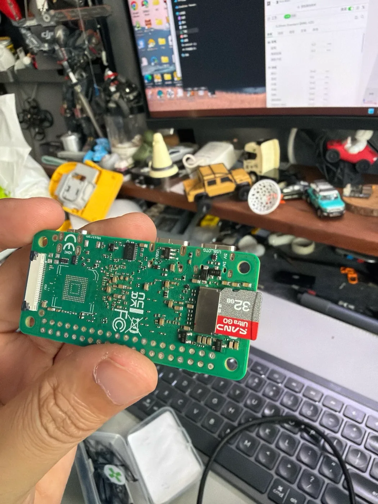

飞特 HD-1910 · 第 4 步，共 5 步
写入系统、通电
把系统写进 TF 卡，插到主板上，再从正确的 C 口接电。
这一步要用到
- 32GB TF 卡和读卡器
- 一台电脑
- Armbian Imager（写卡工具）
- 一根能传数据的 USB-C 线
1. 一键写入系统
系统镜像：作者补充中
适配这套硬件的系统镜像和下载地址还在整理，补上后会更新这里。
- TF 卡插到读卡器上，读卡器插到电脑上。
- 打开 Armbian Imager，选下载好的系统镜像文件。压缩包不用解压，直接选。
- 选你的 TF 卡。看清楚盘符，选错会把别的盘清空。
- 点写入，等它写完并校验通过，再拔卡。
2. TF 卡插到主板
卡槽在主板背面。卡的金属触点朝向电路板，印字的一面朝外，推到底。

3. 接电：用靠近 TF 卡的那个 C 口
主板上有两个 USB-C 口。靠近 TF 卡、板上印着 USB_OTG 和 5V IN 的那个，才是供电和调试接口。另一个印着 USB3 的不用来供电。
线要能传数据
调试要用到数据，只能充电的线连不上电脑。
4. 第一次开机
- 第一次开机比较慢，等一两分钟。
- 连 Wi-Fi 的方法以系统镜像的说明为准。
- 如果要用无线手柄，让 MicroDuck 连 5 GHz 的 Wi-Fi。2.4 GHz 可能和手柄互相干扰，出现断网。这个经验来自 kissqy 的飞特版常见问题。